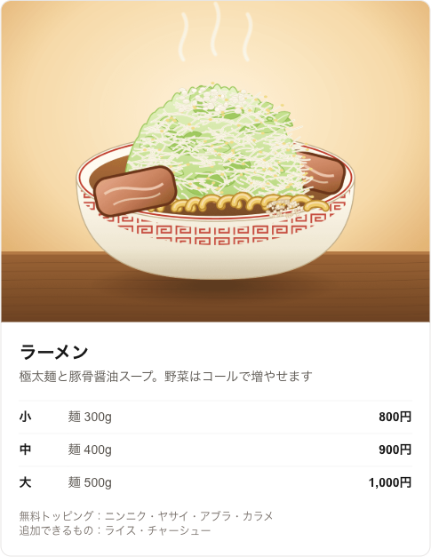
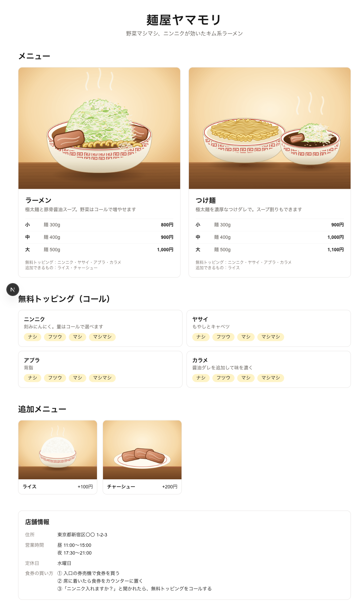

画面: サーバーで安全にデータを取得して表示する
03章で curl でやったことを Next.js サーバーに代わりにさせ、受け取ったデータでメニューページを描きます。画面のデザインは皆さんのサイトに合わせて自由に作って構いません。
Next.js サーバーがトークンで Strapi のデータを取得してメニューページを表示し、トークンがブラウザに渡らないことを確認する。
1. 構造: トークンはサーバーにだけ
Next.js のサーバーコンポーネントは、サーバーでしか実行されない画面コードです(App Router では既定)。ここでトークンを使えば、ブラウザには完成した HTML だけが行き、トークンと呼び出しコードは行きません。00章のたとえの「ホールスタッフだけが通行証を持つ」がこれです。
2. 必要なパッケージ
実行場所: リポジトリのルート
pnpm -F web add @strapi/client server-only
pnpm -F web add -D openapi-typescript| パッケージ | 役割 |
|---|---|
@strapi/client | Strapi 公式クライアント。「写真も一緒に」のような条件を書くと、リクエストのアドレスを組み立ててくれる |
server-only | これを入れたファイルをブラウザ用コードから使うとビルドエラーになる → トークンが誤ってブラウザに混ざるのを防ぐ |
openapi-typescript | 3節の型の自動生成に使う |
3. 型の自動生成: スキーマを二重に書かない
画面コードが「メニューには name, sizes… がある」と知っていれば、タイプミスをエディタがすぐ教えてくれます。この情報(型)を手で書くと02章のスキーマをもう一度書くことになるので、スキーマから自動で作ります。
例えば02章で選択肢として作ったサイズは、"small" | "medium" | "large" という型になります。画面コードで "smal" と書き間違えると、すぐエラーで教えてくれます。
このコマンドは最初に自分で登録します(リポジトリにはすでにあります)。
実行場所: リポジトリのルート
cd apps/cms && npm pkg set scripts.openapi="strapi openapi generate --output openapi.json" && cd ../..
cd apps/web && npm pkg set scripts.gen:types="openapi-typescript ../cms/openapi.json -o src/types/strapi.d.ts" && cd ../..
npm pkg set scripts.gen:types="pnpm -F cms openapi && pnpm -F web gen:types && biome format --write apps/web/src/types"中間ファイル apps/cms/openapi.json は .gitignore に入れてコミットしません。Strapi の OpenAPI 生成は現在実験的(experimental)な機能で、出力形式が変わる可能性があります。
登録したら実行します。
実行場所: リポジトリのルート(DB 起動中)
pnpm gen:types4. Strapi への接続とデータ取得
コードは2つのファイルに分けました。要点だけ見るとこうです。
apps/web/src/lib/strapi.tsStrapi への接続の準備。URL とトークンは環境変数から読む(ローカルは .env.local、本番は AWS が渡す)。なければすぐエラーにして、設定ミスに早く気づけるようにする
apps/web/src/lib/menu.tsメニューページに必要なデータを一度に取得する。写真・サイズ・トッピングのように一緒に取ってくるもの(03章の populate)をここで指定する
apps/web/src/lib/strapi.ts
import "server-only";
import { strapi } from "@strapi/client";
function requireEnv(name: string): string {
const value = process.env[name];
if (!value) {
throw new Error(`環境変数 ${name} が設定されていません`);
}
return value;
}
export function createStrapiClient() {
return strapi({
baseURL: `${requireEnv("STRAPI_URL")}/api`,
auth: requireEnv("STRAPI_API_TOKEN"),
});
}「リクエストが来るたびに問い合わせる」理由(connection()) 省略可
menu.ts は問い合わせの前に await connection() を呼びます。「ビルド時ではなく、お客様がページを開いたときに Strapi に聞け」という印です。そのため①管理画面で Publish した内容が再読み込みだけで反映され、②自動ビルド(05・06章)で Strapi がなくてもビルドでき、③同じイメージをローカル・本番のどこでも使えます。
5. 画面: 受け取った値をどこに入れるか
この章の要点です。「Strapi から受け取った値が画面のどこに出るか」だけを追いかけます。以下はデザイン設定を省いた要約で、実際のファイルは apps/web/src/app/page.tsx です。
const { shop, menus, toppings, extras } = await getMenuPage(); // サーバーがトークンで問い合わせ
<h1>{shop.name}</h1> // 店名
{menus.map((menu) => ( // メニューの数だけカードを繰り返す
<article>
<h3>{menu.name}</h3>
{menu.sizes.map((size) => ( // サイズの数だけ行を繰り返す
<tr><th>{SIZE_LABEL[size.label]}</th><td>{yen(size.price)}</td></tr> // small → 小、800 → 800円
))}
</article>
))}shop.name = 管理画面 Shop の name
トッピング・追加メニュー・店の情報も同じ方法で値を入れます。

6. 確認: トークンがブラウザにない
実行場所: リポジトリのルート(ターミナル3つ)
pnpm dev:db
pnpm dev:cms
pnpm dev:web # → http://localhost:3000- 管理画面で価格を変えて Publish → 再読み込みするとすぐ反映されます。
- ブラウザの開発者ツール(F12)→ Network タブ:
localhost:1337/apiへのリクエストが1つもありません。ブラウザは写真だけを受け取ります。 - ページのソースを見てトークンの先頭部分を検索しても見つかりません。
7. 検査・ビルド・コミット
実行場所: リポジトリのルート
pnpm format && pnpm lint && pnpm typecheck
pnpm -F web build
git add .
git commit -m "feat(web): メニューページ"ビルド結果で / が ƒ (Dynamic) と表示されます。「リクエストが来たときにサーバーで作る」という意味で、ビルド時に Strapi がなくても構いません。